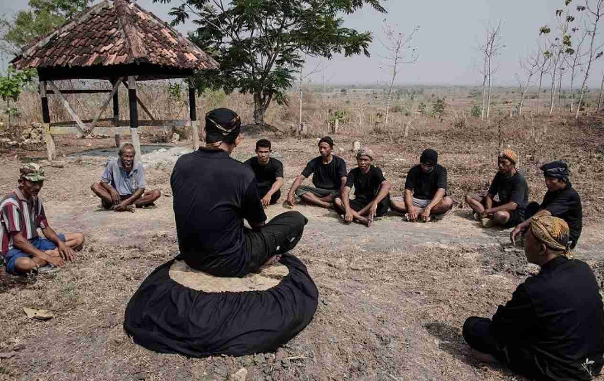

The Samin Movement is known as a peaceful resistance against colonialism.
Its followers rejected taxes and colonial regulations without using violence,
but instead through determination, simplicity, and honesty.
To this day, Samin teachings are passed down as values of life rooted
in peace and brotherhood.
Another teaching preserved among the indigenous Samin community
is *Sohaling Ilat*, which means “movement of the tongue.”
This teaching encourages people to avoid careless speech and to guard
their words so they do not lie or say things that may hurt others.


Saminism emphasizes living honestly, simply, and without greed.
They believe that all humans are brothers who must respect one another.
These noble teachings remain relevant in modern times, reminding us
that peace begins with sincerity of heart.
Most members of the Samin indigenous community work as farmers.
They avoid trading because they fear it may lead to deceiving others.
Farming is also a way for them to stay close to and appreciate
God’s blessings. Interestingly, many descendants of the *Wong Sikep*
do not pursue formal education. They prefer to teach their children
themselves to ensure that the younger generation continues to uphold
their ancestral values and traditions.